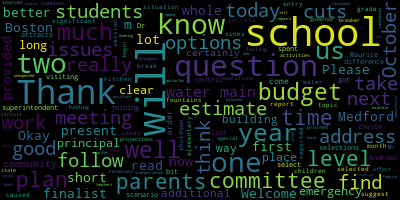
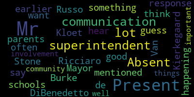
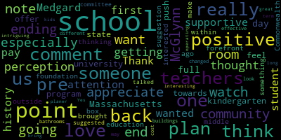
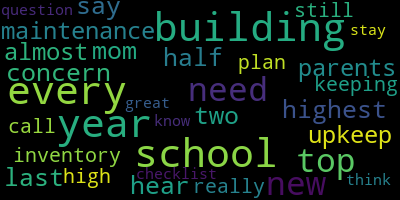

AI-generated transcript of Scenario Interviews for Finalists for Superintendent of Medford Public Schools 05/03/18
Back to all transcripts
[Burke]: The meeting of the Medford School Committee will now come to order. The purpose of the committee as a whole is to have our two finalists for superintendent of schools meet with us and to present, do a presentation so that we can better gauge their style and how they interact with us. So this meeting will come to order at 3 p.m. The secretary will call the roll.
[Kreatz]: Mrs. DiBenedetto? Present. Mrs. Kierkegaard? Mrs. Stone? Absent. Mr. Ricciaro? Absent. Mr. Russo? Present. Mrs. Van de Kloet? Present. Mayor Burke? Present.
[Burke]: By a present to absence, we'll please rise and salute our flag.
[Ruseau]: I pledge allegiance to the flag of the United States of America and to the republic for which it stands, one nation under God, indivisible, with liberty and justice for all.
[Burke]: Thank you. And our first finalist with us today is Dr. Maurice Edouard Vincent. Welcome to Medford. I know you've spent the better part of today visiting our schools and meeting with central administration as well. So thank you for the time commitment you've put into this. And last week we visited Boston. So we spent a lot of time with Dr. Maurice as well as her cohorts. and colleagues and we got to know her a little bit better as well. So thank you for joining us today. The plan is to do three different scenarios. The first one has been provided to each of the finalists and they have prepared PowerPoints to present to us today and your discussion points. And then following that we'll have two short on the fly kind of questions and answers just to finish this off. Thank you. Welcome.
[Ruseau]: Your mic may be on, it may not be.
[Edouard-Vincent]: Testing. There we go. Good afternoon. I'm very excited to be here this afternoon to present my final task so I thank you for that opportunity once again. Welcome. So I was charged with a task, a middle school task.
[Burke]: Would you like me to read scenario one?
[Edouard-Vincent]: There are two middle schools in our city. Both schools have essentially the same curriculum and staffing levels.
[Burke]: Parents have a choice as to which school they will select. One school, the Andrews, attracts more selections than that of the other schools in the blend. The difference is significant, and the entry grade 6 level, 50 students, is the estimate of disparity. Please find attached a report that was provided to the school committee on this topic. What ideas would you suggest to address this situation?
[Edouard-Vincent]: So the problem of practice, as Mayor Berk just read to us, was that there's an unusual trend of increased student enrollment at the Andrews. And so this first slide is just demonstrating an increase in enrollment at Andrews and a decrease in enrollment at Livergrande. And so although I was given some data, I went and did a little more research going back to 2013-14. And so as we're looking at enrollment trends for both the McGlynn and Andrews, the light blue is the McGlynn and the color purple represents the Andrews. And so for grade six, as you can see, there has been a gap, and the gap is getting wider for this current school year and moving into next year, an even wider gap. Grade 7 and Grade 8, the enrollment projections have been pretty consistent, but Grade 6 has been one of the grades where there's been significant or noticeable changes. And I wanted to just highlight that that key problem is happening at 6th grade. Some data that was also shared with me to examine was demographic data. And I'm just going to highlight the two largest gaps are for free and reduced lunch, which is the bottom. two bars and here enrollment of our Caucasian families between Andrews and McGlynn. The other populations, the gap is much smaller, but it was presented in the data that I was given and it was just worth noting in this pattern that there is possibly a perception gap. And the data that isn't shown here is ELL data. Andrews has 0.2% English ELL students and McGlynn has 13%. Here's just one additional piece of data. which shows the performance of the two schools, light blue being the McGlynn and Andrew's purple, this is grade 6, blue 8, MCAS. And there is a 20 point gap in ELA of students, the percent of students meeting and exceeding. And in math, the data is there as well, 23% and 48%. But as I show this MCAS data, if we look back, there are some areas where there is a higher ELL population. The students with disabilities, it's 19 and 20%. Although they're servicing different students or high-need students, It's different populations, but that could be part of the story of the data. Although I'm presenting numbers, I do realize that there is a story behind the numbers that are being presented, and I don't have that full picture. So by front-loading that data, I want to just present the task that I had. I was presented with seven options, and these are the seven options that are before you. Option one to make no changes, add specialized programming, eliminate choice, and a lottery system. So these were the seven possible outcomes that I was charged with thinking about possible solutions. And so as I was looking at the data and thinking about the task that was at hand, what struck out to me is that change cannot happen overnight, that change does in fact take time. And some of the imbalance that is happening is because of parent choice. And so when you're trying to allow opportunities and choice, sometimes for one reason or another, people may choose another school. And so when we're thinking about this, adding a different program may not necessarily improve enrollment. So thinking about scales and just thinking about trying to balance, that balance doesn't necessarily mean it has to be exactly equal, but that you're trying to offer, make sure that both schools are able to offer interesting and or programming that both families and students want to be involved in. So as I was presenting the data and talking about that, this is a challenge. And as this challenge, thinking about what could a solution be. So one step in the solution would be to formally engage the district and the community. in a more comprehensive process to gather additional information because that will allow us to think about outcomes, intended and or unintended outcomes if we were to make a drastic shift. So adaptive and technical change does take time. It doesn't happen all at once. So collectively, I felt that many of the options did take away choice from parents, which, you know, parents, and as a parent myself, you do like to have the opportunity of having a choice. But some of the recommended suggestions kind of felt more technical, and that we were not going to be able to address the root cause. So I was thinking about not necessarily looking at a structure, but thinking about what is the plan going to be. So if we build a structure first and not have a thorough or well thought out plan, then usually you end up having to go back and make multiple corrections. So for some of those reasons, I felt like it would have been short sighted of me to only pick one of the seven options that was available. And as I was thinking about it and thinking about going after finding more qualitative and quantitative data to be able to make a sound decision that would be beneficial to all. And the key question that I continued to ask myself was, how is this shift going to impact the district? families, students, and other stakeholders. So I had some suggestions of short-term options and long-term options. And so these options were considering that Medford has a lot of involvement with the arts already. You hear a lot of talk about STEM, science, technology, engineering, and mathematics, but where there is a vibrant arts and musical community that's here, I really thought that it could possibly be more formalized as STEAM, which is science, technology, engineering, arts, and mathematics. And thinking about, from the STEAM perspective, to introduce it at an earlier grade level. As early as fourth or fifth grade could be a possible option in terms of innovating. because although there is a challenge at the McGlynn and Andrews, as I looked at data going back to fourth and fifth grades, there's actually been fluctuation at lower grades as well. So there's something happening where, and I'm just gonna read a little of that, because this is, I wanna say it correctly. In fiscal year, year 17, There was a 19 student drop from grade 1 to grade 2. And some of this was happening at the McGlynn Elementary School side. Then a significant 53 student drop between grades 3 and 4. So from grades 4 to 5, it increases again by approximately 34 students. And if this is potentially a feeder school to McGlynn Middle, what is causing some of the fluctuation that could be happening at other grade levels? And overall across the district during that time, there was a 50 student drop in enrollment from grade four to grade five. So wondering where were some of those students going, is it a transient population, because again, I have limited data, but trying to piece the story together. And so because there are some clear fluctuations at the elementary school grades, I was thinking about targeting the elementary school grades so that we could put stronger or additional programming in at the elementary level, which would continue on through to the middle schools. And so adding steam, possibly at fourth or fifth grade, considering I know that there is a robust Italian program here, but consider adding an additional world language to promote language fluency, again at the lower grades that will continue on through middle school. leveraging some of the 18 career paths that are here at the Comprehensive High School and thinking about which ones of the hands-on career pathways could be brought down to the middle schools. So thinking about which ones would align more specifically to STEAM or if there was interest based on a survey. So those were some things that I thought about as short-term solutions or options that could help to stabilize enrollment patterns. And on the long-term option, these were in addition to the seven suggestions that were given. consider adding an international baccalaureate, which is a more rigorous academic program which starts at the middle school level, possibly adding a strand, and the math, all of the instructional components are more rigorous than our standard high school strand. And so for parents that would be interested in really pushing that academic rigor, an IB strand is something that could be considered. I have said that there could be a cost thinking about professional development and training for some of the staff for an international baccalaureate program, but again this would be more of a long-term option. Another possibility would be long-term thinking about a possible district restructure. Again, I'm saying costly, that there could be some costs involved, and I was not able to accurately map out what that could potentially be. But one way to think about restructuring would be to consider having pre-K to four at elementary schools, and taking the 5th grade out of the current elementary schools and so this McGlynn Andrews Challenge could possibly bring 5th graders together and have a lower middle school, grades 5 and 6 in one building, possibly the McGlynn, and having all 7th and 8th at the Andrews, so having a lower middle school and an upper middle school, so where parents at the sixth grade level are trying to decide which pathway they want to take to have a pathway where all the students were together and that additional rigorous programming could be available to all students. And again, with the reconfiguration, leveraging the existing programs that we have here, seeing which pathways could be at the upper middle school and or the lower middle school. So trying to create coherence and alignment so that as the students come up to the high school and are thinking about what track they want to follow, that they will have been exposed to many career paths at the middle school level. So these are just alternative options in addition to the original seven. trying to be a good student, the task was for me to respond to one of the options, or to consider, option one being to leave things as they are. And I said, I'm saying, I'm calling it limited data, but based on the data that was available. Again, not knowing the full story and But based on the data that was available, if I had to pick a scenario, I would opt with scenario two, adding selected programming to the Midland. And that goal of adding selected programming would be trying to align it again to the career path here at the high school. something aligned to science and technology, a STEAM program, knowing that they have a higher ELL population, so giving students an opportunity to have hands-on learning. Project-based learning is good for all students, but thinking about a strategy that would be able to help the students continue to have improved academic outcomes. this could be a possible solution. And that would involve PD and coaching plan from the Lynn teachers. partnering with the teachers association and letting them know this is a plan that we would like to do to try to accelerate student outcomes, monitor the progress, and again, not knowing what would be available, but looking at possibly trying to add additional funding to the McGlynn where they do have higher, they have double the amount of free and reduced lunch students than the Andrews. Again, similar population of students with disabilities and their English language learners. And I was also thinking about really being intentional about an outreach campaign to really let the community, students, parents, know about what is available at both schools what makes each school special and target rising 6th grade, so the current 5th grade students and talk to the current 6th grade families that are there to say what impacted them and made them make the school their current choice. And so this way we could see improvement targeted, our improvement, this way improvement can be targeted based on the data. And it would allow us to try to address the root cause. Because we still don't know what the real root cause is without being told by the constituents. And then rebranding of the school, highlighting bright spots and celebrating student accomplishments. so that the community at large knows that good things are happening at the McGlynn School as well to balance enrollment. And so how would that look? These would be the steps that I would take to lead this process if I was making the decisions. I would conduct an outreach campaign. I would intentionally engage all stakeholders And in these, once all stakeholders have been engaged, community meetings would be afforded, or at different locations, not necessarily only at the schools, but where people, where you can meet people and have people give feedback. And again, including stakeholders, which would be community partners, university partners, as well. So once these community meetings meetings where we would have an opportunity to come, hear the data in user-friendly language, understand what the challenge is and what does it mean in terms of staffing. If the school is over-enrolled by 50, by 70, at some point you're going to end up having to remove staffing from one school and continue to send staffing to another school because of the over-enrollment. And that would have an impact on culture and climate. So there are unintended outcomes and consequences sometimes when we are forced to make changes because of fluctuating enrollment patterns. So at these opportunities, the stakeholders would be able to engage with the data. After we would have these community meetings, where all stakeholders would be able to provide feedback and possible solutions, all of those solutions would be brought to a cross-functional steering committee. And that steering committee would consist of members of the school committee, a few members, principals, teachers, a few parents, and say, we conducted community meetings. These were some of the suggestions or best thinking that has come out of the community meetings. And based on that process, The steering committee would vet, look at costs to see what is actually feasible and what is not feasible. And based on those determinations, we would make a recommendation to say this is what we're going to bring to the school committee. I would present to the school committee, these are the recommendations from the scared steering committee, and I would like to be able to present at least three options. Three options that I would be able to live with as the superintendent, but three options that the cross-functional team of stakeholders contributed toward. And so that it would be a group decision. And so the school committee would be presented with three options. And of those three possible options, the school committee would pick an option that they felt would best serve the school community and the district at that time. And once that did happen, based on the recommendation from the school committee, we would create a strategic plan And that strategic plan is what we will use moving forward.
[SPEAKER_05]: Thank you. Very good.
[Edouard-Vincent]: And there is a slight appendix and I will leave it with you. These were just bright spots of the areas where the McGlynn school is actually outperforming the state with some of their subgroups, subpopulations. So I wanted to just show that for English language learners, the McGlynn students are at 65%, whereas the state, other great 68 ELL peers across the state are at 49%. So leveraging what's working and again celebrating those wins.
[Burke]: So if we're currently in the month of May, and we, parents have selected which school they'd like their children to go to next year, This process, I would imagine, would take some time. So what would be your next steps for the September school year?
[Edouard-Vincent]: So I had the great fortune today of being able to go visit schools today. The Roberts, the McGriff, Andrews, and here also at the high school. And so in my time at the school, I know that there is currently new leadership. And I am wondering, with the over enrollment of 15 to potentially even 70 students at the other school, is there a possibility to continue to do some campaigning and explain to parents the predicament that the district is now in and asking parents to say, based on the leadership that is working at the school now, are there families that would volunteer to change their selection? And so I just was wondering that would not involve having to change staff, shifting space, and I was just wondering if that was still a possibility to formally present this data to the rising sixth grade families that have selected the school and say would they mind reconsidering or were there families that would volunteer to see if we could at least balance the numbers and have an additional 25 to 30 students register for the McGlynn so that the numbers could be more balanced between both schools. And so that was just a suggestion of something that, you know, might be a possibility if parents truly understand the position that it puts the district in. Any other questions on the presentation?
[Burke]: Mr. Benedetto?
[DiBenedetto]: I just have a comment. I just want to comment how I appreciate you ending with the positives of the McGlynn School. I think there are teachers in the room and in the community who are going to watch this and to end on a positive note, especially with perception that the other school was getting more and more with, I thought, was very supportive of teachers. And as a student, I just wanted to pay attention to that point. Thank you.
[Ruseau]: So I didn't go and add a lot more data because I felt given the task it was very difficult to try to
[Edouard-Vincent]: selected option with the data set that I was given. And so I know of the early childhood programming, but just thinking about two middle schools on a campus, essentially the same campus within walking distance of one another, and that's what caused me to start thinking about other options and saying, how could we leverage? They're not located on opposite sides of the city, It's the same campus, so there could be additional options outside of those seven. And so, and then from my visits today, knowing that the early childhood classrooms that are here, and just thinking about how you can open up enrollment, open up more early childhood seats, that parents, if given an option, would most likely jump at that opportunity. But again, it's a shift, and that's why I did list it as kind of a long-term, because thinking about Lacey Accreditation, thinking about the elementary schools, and a shift of saying we want to add additional or pre-K seats and move fifth grade potentially to another location that's talking about adding people and moving people and change seats time and people need to be able to think about it and understand the larger picture. So that was why I kind of put that out there as something to be considered.
[DiBenedetto]: Just a point of history, Medgard was one of the first schools in Massachusetts to have full day kindergarten. So I would love us to offer a pre-K program and really push the state towards university pre-K. I feel like that's the foundation of education and I would love to be on the forefront of that within the Commonwealth. And I do like you thinking outside of the box because we have someone had brought a suggestion to us to make one middle school. And that was something that I was interested in at that point, a while ago. Someone had suggested that, we had talked about that as a committee. The buildings itself would have to be changed because the bathrooms, it was not cost effective, but this is a different way to look at that, and I really, It's very interesting and very intriguing to me as a planer. Yes, it would be a long-term plan, but I think it's a great plan.
[Edouard-Vincent]: There was one other alternative that I just had listed in my notes, but I would have needed a feasibility study, but one suggestion was to possibly relocate the 8th grade to the high school. And by having 8th grade here, the opportunity to be teaching algebra in 8th grade so that by senior year the students would be able to take more advanced mathematics. And from a licensure perspective, high school teachers are licensed in 12, middle school license is 5-8, so that if 5th grade moved up, the same license, the same teacher group, but they would have more content area. So there was some wiggle room, and I know that some people are nervous about 8th grade, potentially having 8th grade with seniors, but this is such a large, large facility that if that was something that was done in a long-term plan, that they could be isolated to one part of the building. But I was just trying to think about other ways to use the existing buildings that we currently have and supporting the fluctuations because some of the schools are currently having bubble classrooms right now, which are bubbling up. And we may end up facing another problem where there's not enough room at one location, no room in the inn, and then trying to figure out where are we gonna place them. So that was another long-term suggestion.
[Burke]: Very good, thank you. Okay, question number two. It is 9.30 a.m. and your elementary school is in session when it is reported to you by the principal that a water main break has caused a shutdown of all sinks, toilets, water fountains, and kitchen operations. There is no clear estimate of how long it will take to clear the water main. Most parents of your students are at work or at other activities. How should you proceed? What are your options?
[Edouard-Vincent]: So the first thing that was coming to mind when there's an emergency, and I'm just thinking about what is the alternative site or alternative location, because for this kind of, the fact that this takes place at 9.30 in the morning and rush hour, health, Sanitation issues, it's really a crisis. We would have to definitely notify families immediately, even if it was through roll call or connected. I don't know the logistics of an evacuation plan, but I would recommend evacuating the school. to the evacuation plan facility. So logistically, some schools, if something like that were to happen, where the MacLennan Andrews are on a very similar campus, to be able to say we're bringing the students over, using the auditorium, the cafeteria, and the other large spaces to bring the students to keep them safe, But the fact that food would not be able to be prepared, restrooms could not be used, students could not drink, we would not be able to leave them in that space. So we would have to notify and immediately look to the alternative location to bring the children to a place where everyone is safe and sound and all families are notified to this alternative location. But again, for some of the schools that are at a greater distance, That would require, I would say, orchestration of a lot more offices. Of course, Mayor Burke, he would definitely be notified right away. I don't know who would be able to get access to school buses right away, how quickly they would be able to be deployed. transport from Brooks here to the high school or to another school, but we would definitely need to move quickly. And I think that evacuating the building, acquiring the school buses, notifying families, that all of that should be able to happen in one hour's time, or we should be prepared to do that in one hour's time. And I say that If during a fire drill, the expectation is that you evacuate the building in under two minutes, and that's for students that are definitely ambulatory and that no fire egresses are blocked, so if in this event of an emergency, that that could be part of the emergency evacuation plan, emergency contingency plan, so working with the Metro Police Department, maybe for escort, but for families to be aware, this is what would happen, these are the steps. So it would definitely involve all the departments of the city, and the number one priority would be keeping all students safe. Very good.
[Burke]: Are there any follow-up questions for Sandy?
[Van der Kloot]: Thank you. I just want to follow up and I wonder whether you've ever faced this kind of situation at one of the schools that you oversaw or the principal of and what did you do?
[Edouard-Vincent]: So, um, interestingly enough, I had a situation. It was not a water main break, but I was at one of my schools, the Nathan Hale School. Um, it's an elementary single-strand T5 school, and there was a smell. The heat was on, but there was a smell like gas was coming into the building, and we were trying to figure out where the smell was coming from, but we could not figure out. And the smell kept getting stronger, So we evacuated the building and the closest station is the Shelburne Athletic Center. It's not even a 10 minute walk, but we evacuated and went to that building and that's part of our safety plan. We called them and said we're on our way. Everyone grabbed their jackets and we walked to that other location. We were there for under 30 minutes. The fire department was called. The fire department came. They cleared the building and what had happened was there was an actual fire. not immediately at the school, but the smoke from the fire somehow got into the venting system. So the smell that it was giving off made everyone think it was the actual school, but something smelled like it just wasn't safe. And so we took the route of safety first. And we wanted to be safe, not sorry. And again we evacuated, we were there for less than 30 minutes, and we walked back. So the whole entire evacuation was under an hour.
[Van der Kloot]: Was there any special education students or students with disabilities that you had to make arrangements for?
[Edouard-Vincent]: At that school, the students, it does not carry a separate program. There are students with disabilities, but all students are ambulatory. So it's an older building, no elevator, no wheelchair-bound students. So everyone, all teachers, all staff, paraprofessionals, everyone evacuated and went to the alternative site. So with that, that's something that in the evacuation or safety contingency plan for schools that have students that are wheelchair bound or severe disabilities, the, you know, the location, the alternate site would need to be able to accommodate those students. Great, thank you. Thank you.
[Burke]: Can you follow up on that? Okay. Okay, final question. You begin the school year 2018-19 with a good budget plan in place. In October, you find out that state revenues are falling below projections and the governor plans to make nine seat cuts that will affect your expected funding sources. The cuts to the special education circuit breaker and homeless transportation will leave you $250,000 short. Also, there are two unexpected emergency building repairs that will require at least an additional $150,000. What will you do to address these issues and maintain a balanced budget? By the way, it is only October and you know other financial issues can arise throughout the year. What options would you recommend? We've seen 9C cuts, correct?
[Edouard-Vincent]: You've seen them? Yes, they have happened. The first, I'm all joking aside, the first thing that came to mind was fundraise. I was like, oh my goodness. With the $250,000 shortage for special education and the homeless transportation, I feel that we would have to look at our budget. We would have to address We would have to take from someplace else in order to support these two populations of marginalized students where students with disabilities and students that are homeless are already facing challenges. to take away $250,000, which also includes transporting them to school, that would definitely be a hardship. However, there are creative ways to look. Also, I'd be very interested in looking at other forms of transportation, so if we're talking about students that could potentially be wheelchair-bound students, is there a way to partner with the MBTA for their wheelchair, handicapped, accessible transportation rights that they have? and to say this is an extenuating circumstance, would they possibly be able to partner with the school? Again, I think sometimes there are a lot of community partners that we overlook and that community partners are often willing to support. Also, hospitals, Mass General, we have Lawrence here, we have the smaller hospitals, but partners, Beth Israel, many of the large hospitals to be able to reach out to them to say this is challenge that we are experiencing and to explain these are our populations and I'm saying hospitals because many of the students with disabilities have also serious medical needs so the hospitals are aware that this is not something that we're making up. and to ask them on their philanthropic side if they would be able to support us in this particular endeavor based on the limited budget that we have available. So I would be willing to look at partner agencies and see how we could work collaboratively to provide transportation for our special needs students and students that are homeless. So those are just some of the things that I would do in addition to making cuts at the district level. The additional $150,000 in emergency building repairs, I know that on the vocational side of the house that there is a strong partnership with some of the local unions right now that are partnering with the district training our students on the vocational side of the house and for some of these building repairs. Today when I was there, I know that some of the students are allowed to do their practicum or their placements actually in the field. So possibly asking those local unions Would they be able to work with us where we provide them with students that also are being trained? Is there a way that they could reciprocate and possibly not do the work for free, but this $150,000 even to be able to have that number cut in half by 75 and maybe work with 75,000 and think about fundraising the remaining 75,000. I don't know the philanthropic circles here in Medford yet, but to look at that, I do believe that partnering with community partners and businesses if they know what it's for and what it's actually going to do, they will be willing to step up to the plate and support the school.
[Burke]: Are there any follow-up questions? Thank you so much. Those were great responses for impromptu questions. We really appreciate the time and especially digging deeper into the statistics. We know staffs don't tell the whole story of the child, so certainly in our trip to Boston, I think we gained a comfort level with how you do look after children in your district and how everything you do really is focused on them. And, you know, we were really lucky to be able to spend that time with your your partners here. I guess just one last question. If you were selected superintendent, obviously we'll be working on a budget over the next, you know, through the end of the year, and you'd be inheriting that to a degree, so what is your availability to be in our community while you were finishing off Boston?
[Edouard-Vincent]: I definitely have some flexibility. If I were to be selected, I do have some flexibility. I am committed to completing all my evaluations for the principals that I have worked with this year. closing up the year on a strong note, but I definitely have availability that if that were to happen, I could modify my schedule to be able to support work here in Medford and finish my work out in Boston as well.
[Van der Kloot]: I just wanted to know whether you had any questions for us.
[Edouard-Vincent]: I guess my question would be, when do you expect to be making a final decision?
[Burke]: As you can tell, we're missing two members. One planned, I'm not quite sure on the system. In respect of them, we will have a committee of the whole meeting Monday evening. What is it, 5? 6.15, we scheduled before. And then we will discuss the two candidates and hopefully we will be reaching a decision that evening.
[Edouard-Vincent]: I just would like to say thank you again for selecting me to be part of this process. It really has been my greatest professional honor to come back home to Medford. and be able to present to you and be part of this process, preparing the documents, studying the data, learning about the schools, and going to the schools. And so what I can say is my word that I assure you that if I were to be selected, I would give you 100%, I would give you my best. and nothing less. I believe in working hard. I am truly a committed educator and I will take all of my experience, all of my skills, all of my knowledge that I've gained these past 24 years and bring those skills here to Medford, back home, and use them here and learn from the team of wonderful people that I got to meet today. So I hope to hear a positive response, but I respect the process, and I thank you again, and I thank the Medford public school community that has really treated me warmly as I've been in all the schools.
[Burke]: Thank you so much.
[SPEAKER_02]: We need maybe five minutes. We're going to take a five minute recess.
[Burke]: Thank you so much for joining us. It's not coming through.
[Ruseau]: It's coming through okay?
[Burke]: Welcome back to Medford. I know you got to spend the day with Central Office and our various principals and teachers the other day, so I hope that that went well. And we're pretty much at the same format. I can re-read the question if you'd like. There are two middle schools in our city. Both schools have essentially the same curriculum and staffing levels. Parents have choice as to which school they will select. One school, King Andrews, attracts more selections than the other, the McGlynn. The difference is significant at the entry grade sixth level. 50 students is the estimate. Please find the task force report that was provided to the school committee on this topic. What ideas would you suggest to address the situation? Thank you.
[Martellone]: Thank you very much. For those folks who don't know me, My name is Thomas Marloni. I'm from Medford, and I'm very glad to be here. Thanks for the opportunity. I put together a PowerPoint, and I've answered the three questions that you had posed. There were three in the packet that I went through. And I'll go ahead and answer your questions. So the three questions that were asked in the packet that you shared was, is the grade six disparity this year a fluke or trend? Will the current action plan balance enrollment towards another intervention necessary? And then you also asked what ideas I would have or suggestions I might have to address the situation. So in the following slides, I'll present two sets of data to you. There is data covering 17 years, that's from 2002 to 2018. And then the other data set covers six years, 2013 to 2018. I chose the six year period because it was a period where it appeared that ELL enrollment between the two middle schools had changed, and I wanted to look at that six year period. I would just ask that while you're looking at the slides and looking at the data, if you might ask what can we learn from the data that you're seeing? So this particular slide shows a comparison of annual enrollments and their average annual enrollments at both Andrews and McGlynn middle schools from 2002 to 2018. If you look, you'll see that on average, across the 17 year period, the Andrews had an enrollment, an average enrollment of 527 and McGlynn had an average of 533. They were very close over that time. across both schools over that period of time, 17 years. It shouldn't come as any surprise, if you're looking at this slide, that you would see that when you're looking at the average grade six enrollment, they were both extremely close. And this, again, is an average of 17 years. So you'll see that the Andrews had 173 students and that the Midland had 174. This is based on a 17 year average. It was almost identical. So if you'll look at this particular slide, this is for a six year period, and this line shows a comparison of annual enrollments at the Andrews and McGlynn, and it's an average. So this is for the past six years. And what you'll see is that the numbers, again, are actually very close. You'll see that the Andrews has about 503 on average, and that the McGlynn has 493. And so, again, while there have been annual fluctuations, those numbers were almost identical. What you'll see for trend data from the past six years is that there has been a significant decrease in the number of sixth graders, which you're aware of, at the McGlynn. While the Andrews has experienced larger numbers of students, and this was noticeable when you look, you'll see that Andrews, their average grade six enrollment over the past six years has been 175 students, and then McGlynn, 153. So the question that you posed, is grade 6 disparity this year, is it a fluke or a trend? I would say to you it is neither one or the other. It's actually both. And the reason I say both and I would emphasize is that really over the past 17 years enrollment between both schools has fluctuated and you saw that from the graphs. There were some years where one school had more, the other school had less. So I feel like over a 17-year period, there was loops in enrollment that happened each year for both schools. The 17-year average shows that enrollment between both schools overall was evenly distributed. Or I would say that there was a trend in the past six years and when you look, the McGlynn has decreased by about 22% and the Andrews has increased by about four. And I looked back, I provided you a package where I had some articles, I took from the local, and the superintendent noted in a memo that part of what they believed was that the decrease in the enrollment at the McGlynn was from a public perception that one middle school was better than the other. So I feel like there's some trends there. The other pieces, the district has had a declining enrollment, so I looked at enrollment over a number of years, that may have some impact as well. So, one of the other questions that you posed is, will the current plan balance enrollment or is another intervention necessary? And what I would ask you to think about, I'll present some self-proof data, and as I'm showing you the data, I guess I would want you to consider if the current plan not only addresses enrollment differences, but will it actually bring about balance in other areas, such as race, socioeconomic status, The bigger picture should be more than just balancing enrollment. There are other factors that should be considered. I think you'll see some stark differences in this slide. I looked at the particular subgroup data over the past six years. And what you'll see is that the high needs profile of the two middle schools has become increasingly imbalanced. You can see on the left, the Andrews had an average percentile of high needs students that was 39.95. Well, McGlynn had an extremely significant difference, and that was 53.98. For those folks in the audience that may not know, high needs, as identified by DESE, includes those students who are ELL, former ELL, special education, and low socioeconomic status. And what I noticed was that there has been a decrease of about 16.6% in the number of I-Need students at the Andrews, while during the same time period, the McGlynn has increased by about 13.4%. I then looked at average percentile of low socioeconomics, those are your free and reduced students, and they're categorized by the state in that manner. And again, there was an extremely stark difference. If you look, the McGlynn had 41.08% of its students on average. And if you look at the Andrews, that number was 24.93. So those numbers were significantly different. Again, when I looked, there's been a 15.1% decrease in the number of low socioeconomic students at Andrews, although in the same time period, the McGlynn increased by 9.1%. That was about over the last four years. I then went ahead and I looked at the average percentile of ELL students. I did research and data. I did not see and I couldn't find any documentation that looked up to a certain point that the Andrews did have populations of students that were identified as ELL. Over the past six years, when I looked at the DDS data, except for 2018, there were no reported ELL students. So when you look at this particular slide, you will see that the Andrews had 0.03. and that the McGlynn had 9.17. And if you look at the graph, what you'll see is, this was a little higher, it took a dip in 2014, and then has made a steady increase. But even from this very first column, the grades for McGlynn, if you look in 2013, that number has almost doubled. And I understand that there's a district-wide program there, but I think it's important that, as we're thinking about balancing enrollment, we're also thinking about other experiences that students have over at school. I then went into the packet that was sent to me by the district for the presentation, and as I looked at the different subgroups, what I saw was that there, as I pointed out to you, were some other significant disparities across varied populations in the schools. So if you'll notice, I'll start at the bottom, I'll work up, but the McGlynn has a free and reduced, again, that's considered high needs, and that was 56.4, whereas the Andrews had a percentage of 30.7. That's a significant difference. You're talking about a little over 25% of the school. In addition, Hispanic population, about 14.4%, almost double. This was extremely interesting to me, is the fact that the Caucasian population in the Midland was only about 50%. there was almost 25 more percent of students who were identified as Caucasian at the Andrews. Black population, 10.2 and 17.2, and then the Asian population at the Andrews was 4.8 and the Glen, 14.4. So there were significant differences in free and reduced and other ethnic background populations. What I did notice, I looked at special education data, was very close over a period of years, and the numbers were close this current year as well, based on the data that I saw. I did also take a quick peek at a number of years of discipline data, when I noticed that the numbers, and they weren't grossly different, but the numbers of students, the total number of students, not a percentage, but the total number of students that were involved in discipline incidences reported to the DSE was slightly higher at Andrews than at Midland. That could in part account for the fact that they have a behavior program there, but I didn't have other ways to dig further into the data. So, I looked at the current plan, and your current plan offers parent preference. So, a very quick outline of the plan, parents were asked to submit a school preference form. In addition, the district is conducting a partial lottery to avoid, an attempt to avoid substantial differences in enrollment. Each middle school held an open house, and when Lynn went first, central office administrators were giving the presentations at the open houses with the principals present, and then the presentations were going to highlight programmatic differences that each school had. So the next question that you asked was, will the current action plan balance enrollment, or is another intervention necessary? If so, what is it? So it's my professional opinion that the current plan may address enrollment disparities at a surface level in the short term. I believe it will not comprehensively address other underlying issues over the long term period. I believe that in addition to balancing enrollment, the plan should provide all students with equality of opportunity and it needs to also provide equality of opportunity and participation in each of the schools that they attend. I think the plan, again, while it addresses the very service issue, the very public issue about enrollment, I didn't see in the plan where it talked about community and parent perception issues. And I think that's important. And I think until those issues get addressed, I think parents may continue to give a preference or a choice of one school over another. My hope would be that parents would, if you will, get their kids into both schools because they view both schools as being wonderful places for children. There were other concerns, and I don't know if the new plan, at least in regards to enrollment, addresses this, and those were concerns from the community related to building-based leadership and communication. I did wonder, in the past you've had parent choice, I wondered that based on the school plan, if it would surface a new problem, and that would be that parents gave a preference, and then if they did not get their preference, they might feel that they weren't listened to. So, I think that you won't know until you try it, but I guess that was the wondering that I had. I did see in a couple of places there was talk about the school committee taking ownership and there was talk about teachers taking ownership, but I guess what I would like to say is that I feel like this particular issue around enrollment and quality of opportunity and access really is a community issue. And I feel like there needs to be work done that says to the community, these kids belong to all of us. don't just belong to one school or the other, then we need to all be collaborating to figure out how to best make this an equitable solution for everyone. I noticed that school administrators were not presenting at the open houses. I believe you have the deputy superintendent doing some of the presentations. My concern with this plan would be you're on a daily basis, your principals are the people who interface with parents and other community members that come to the school. If you have someone that's outside of the school giving a presentation, will people in that school of their schools. And you do run the risk of people wondering, like, I wonder why the principals didn't give this presentation at the open house. These are the people who look at their children every day. The other piece is, I guess when I think of a lottery, I think of, like, maybe getting a scratch ticket and winning money. And so when I hear the word lottery, and I'm equating that with student assignment, it does make me wonder what we're leaving to chance on behalf of students. And so that made me wonder how this will work. So, for the purposes of this presentation, I know you've probably all seen this many times, but I would like to begin by highlighting the following, and that is that in your mission statement, and I'll say our mission statement, I live in the community, I feel like I have ownership in the schools, all students are afforded a safe and healthy learning environment in which they develop the knowledge, skills, and attitudes to reach their full academic and personal potential. Additionally, the mission statement includes that we'll provide all students with a 21st century education that will enable them to be lifelong learners and contributors to a diverse and rapidly changing world. And part of the diverse world that these children live in is their middle school experience. And when you have the disparities that you have, I'm wondering if we're really able to accomplish the mission that we're setting out, that these four kids are here with us, and then as we're preparing them to leave our schools. So, again, in thinking about addressing this, I think the desired results of the district should be that we balance enrollment and that we provide a quality of opportunity and participation for all of our students. And the third question was, what ideas would you suggest to address the situation? So again, keeping in mind balancing enrollment and providing the quality of opportunity and participation for all students, it would be my recommendation to implement a geocode placement model in lieu of a parent preference model for assigning students to middle schools. at least a year of that in place, so you would be looking out for the 19-20 school year. I would also be conducting a detailed root cause analysis, and again, probing further into your enrollment across ELL, low socioeconomic, high needs, special education, and other populations. In addition to doing that, and perhaps at the same time, I would be looking to create and administer a parent survey, and then analyze and share those results with key stakeholders, including parents. You may, again, further probe parent perception, school-based perception, and why people make choices or preferences that they do. In addition to that, I think the work of the superintendent would be to work collaboratively with middle school staff and administrators to be soliciting their input, and then also ensuring that middle school staff and administrators in each school provide parents with regular, timely, and accessible communications, which I think, in great part, will help close some of the communication gap, and I think will help improve the parent perception. I think that's the case. I would recommend, and if you have questions at the end I can explain a little bit more about this, you may, I suspect you may, but I would want to be partnering with field experts to develop these geocoded feeder patterns, and I've done this work in Lexington, and that would ensure equitable distribution based on student demographics. As far as my work with the school committee, I would be looking to establish a policy that creates this geocoded feeder pattern for both middle schools that reflect the city's demography and promote diversity. I also believe in order to get that done, other things that need to also happen are to develop a policy which identifies what might be known as buffer zones, that allow flexible assignments to either middle school. And if you have questions, I can say a bit more about that at the end. While you're creating the policy related to buffer zones, there also needs to be a flexible assignment policy that allows the superintendent to address enrollment fluctuations should they occur. If we're thinking about equality of opportunity and participation, then we need to ensure that we're providing the same level of programming in both schools, including, but not limited to, ELL programs. If we're really thinking about balancing our enrollment, but then also a diverse student population, that needs to be considered. Another consideration would be to establish a new position of shared middle school department heads. We've done this in Lexington, so at one point in time we got both middle schools who were a bit not on the same page. By having a shared middle school department head, those people worked across both schools and they helped ensure continuity around programming and curriculum for kids. was extremely helpful. Each school still takes on its own kind of culture and flavor, if you will, but it helps to ensure that kids get a similar experience. I feel like that, in part, would also address some of the parent perception piece, if they think that the schools are different. The other piece of the equation, as you're doing this work, is to proactively collaborate with the Mentor Teacher's Association to ensure a smooth transition process. You would need to be doing some reconfiguration of any bus routes or transportation to align with changes in new feeder patterns. And then, of course, I think always for any district, the trickiest, one of the trickiest part of the budget, and that's to develop a budget that would reflect and support the school committee's policy determinations in conjunction with moving from a parent preference system to a geo-governed feeder system. And then lastly, it's one of the, what I think are one of the most important parts or pieces is to collaborate with school committee, central office administrators, school administrators, MTA, and staff to create a communication plan and timeline. Because I think if there were to be a shift, one of the very best things that you can do is get out in front of any misperceptions that people might have around how this might work. Those are the recommendations that I have. What I would share with you is that I think once a system was put in place that would help at least begin to address the enrollment piece in part, I think that that would be a very strong foundation to then build upon and then address some of the other needs, which would be around balancing out some of the disparities around free and reduced and high-needs populations and others. I'm happy to answer any questions you might have. I guess that you may want to know about geocoded ear patterns and buffer zones.
[Ruseau]: Can you explain how geozones are different than just drawing lines now?
[Martellone]: So there are companies out there, I'm not going to drop a name because I feel like it would be inappropriate to do that, but there is a company that's located in Cambridge, and I've worked with them, we worked with them in Lexington, because we were looking to address overcrowding and enrollment in our schools in Lexington, and what they do is that they take information from your student information system and they geospatially plot all of your students in the district. And so sometimes what happens is that as you're kind of drawing lines, you need to kind of take into account either high-density population areas. You've got to look and see what might feed into where. So what they literally do is they plot out students, and then you use kind of that plot to help kind of either readjust the lines or move them, and then you create these feeder patterns. So for instance, In my current school district, I served on an enrollment committee where I worked with this company and what we did was we looked at each school's population. For instance, we have three elementary schools that feed into one middle school, and you have three that feed into another. And I know that that was one of the recommendations, but for instance, if you are considering that you're having two schools that both have high-need populations feeding into one middle school, you'll end up, maybe you'll balance your enrollment, but I think you'll still end up with disparities. So the geospatial placement helps kind of identify where populations are and then helps if you need to slightly move someone.
[Ruseau]: So it's really fancy gerrymandering. I'm sorry? It's sort of like gerrymandering. It's not trying to be like, this neighborhood goes here, it could be like... No, no.
[Martellone]: They work to kind of group larger chunks of neighborhoods. And so I'm gonna lead into the buffer zone question, which may help. So what we found was, in some of our most densely packed neighborhoods, or other neighborhoods where there were housing developments, where there might be lots of movement of people, or these areas that were kind of on the cusp of, let's say, one neighborhood to another, we created a buffer zone policy. And the buffer zone policy basically works in the way that if a family moves in, you let them know when they move into a neighborhood. You want them to know you're in a neighborhood that's a buffer zone. You may be in this middle school or you may be in this middle school. So that buffer zone allows the superintendent some flexibility. if you see that your enrollment is off. I mean, there's always an appeals process, and the goal is to try to be careful about how much flexible assignment you're doing, but that, at least in the district, and now that helped at the elementary level, but I'm thinking, obviously, here, I'm thinking about how I'm competing with other schools. Any follow-ups? That was good.
[Burke]: Thank you very much. We're going to now move on to two additional questions. I'll read the first one. The building emergency. It's 9.30 a.m. and your elementary school is in session, but it's reported to you by the principal that a water main break has caused a shutdown of all sinks, toilets, water fountains, and kitchen operations. There's no clear estimate how long it will take to repeat a water main. Most parents of your students are at work or other activities. How should you proceed? What are your options?
[Martellone]: So I unfortunately had to evacuate the building before. And what I would share with you is that the very first thing that I always do is I notify the superintendent. Obviously, it sounds like this is from a principal's perspective. So what I would want to have happen is that the one that, first that I would get a media call from the principal letting me know what had happened and what the conditions were, et cetera. The very next thing I would do is I would notify the chair of the school committee so that way you were aware. And then I would look to see, my hope would be, and I have this in every other district where I work, is that there's already an identified evacuation route, if you will, if the school has to move offsite. So each of our schools should have a local facility or a neighboring school where they can evacuate to in the event of some kind of emergency. The other thing that I would want to be doing, so I would vote one if I'm superintendent, the principal calls me, I notify the school committee. The other thing I would want to do is see, check on the town side to see if they knew what the problem was with the water and when that might be fixed. So depending on what time it was, if it was near the end of the day, I would want to know, will we still be able to use bathrooms or what would be operable depending on the time that you're telling me here, it's 9.30. and we wouldn't be able to really sustain kids. So I would be looking to work with food service and transportation, move kids to the closest emergency site that should be identified. The other pieces is that I would be looking for schools, and we've done this before in schools where I've worked at, we, sometimes we've done a practice drill where we evacuated to the other school when there wasn't an emergency so students knew what to do. And then I'd be reviewing that periodically with staff. If you thought that we were going to send out a communication to parents, I'm not, I had asked a little bit about this yesterday, so in districts where I've worked, we've had a communication system where I could send out a phone call and a text and an email to parents, and you can set it into an emergency mode and that message goes out. And so I would be letting parents know as quickly as I could. Or having someone else at central office, I'd get someone else to help collaborate because you're not able to necessarily manage everything. And I'd ask for the assistant superintendent to work to get an emergency communication out to the parents, letting them know their kids were safe. Then we were evacuated to another building. And if I felt that we could sustain kids there during the day, what I would do is I would keep them there during the day for lunch. Maybe we would have some activities lined up. And actually, in thinking about my past experience of what we've had to do with students off-site, I would have something that was already pre-planned. So in an emergency bag, I would have some things that would inform people of what to do with students. If in fact you get to be at the school and you think that you're going to and have them be picked up, you would need to establish a parent reunification center and have parents come to get kids and show an ID so that way you could prove who they were and keep a very detailed list of who was police. If the district has other emergency protocols, I would be looking to see if you follow an incident command protocol where certain people deal with media, certain people deal with dismissal, certain people deal with food and other types of supplies that kids need. My experience has been, if this were to happen in the spring, I might ask my PE teacher and see if the neighboring school would be evacuated to another school, if we could partner, if the weather was good to be outside. There might also be other activities in the gym while we were there. Any follow-up questions?
[Burke]: Mr. Vendetta?
[DiBenedetto]: So I did not bring kids back to the school if the school was not back up and operating.
[Martellone]: if the school could be repaired by the end of the day, if the water main could be repaired and water was restored, I would get another communication out to the parents and let them know that we were going to return the students and dismiss them there. Obviously, I think you saw me at dismissal time the other day when we visited. Dismissal is an extremely hectic time of the day. And so, I'm making an assumption that it's this hectic year because it is everywhere else. And so if I thought, let's say I knew at 1 o'clock that I could get the students back to school and that the water main was repaired, or let's say they could get water back to a portion of the building, I would quickly have a team of people together that would help do a quick plan and figure out how we might get this back to the end of the day. If not, then what I'd have to do is I would ask, again, my hope is on the superintendent, so I would be working with the principal in the transportation department. to come and get students. And then if there were students that needed special transportation, we would arrange for that. Sometimes, for those students that need special transportation, parents sometimes prefer, in a case like that, that they would pick up their child, and we would offer them that option, but we would still plan on bringing those to come. The other piece, and I didn't mention this, but I guess I would hope or expect that we have systems in place where each school has an emergency crisis team, and that that team would meet regularly so that they would have some plan to know what to do in the event of an emergency like this. Thank you. You're welcome. Very good, thank you. You're welcome.
[Van der Kloot]: Very nice stuff. This is a budget scenario.
[Burke]: You begin the school year of 2018-19 with a good budget plan in place. In October, you find out that the state revenues are falling with the low projections and the governor plans to make 90 cuts that will affect your expensive funding sources. The cost of the special ed circuit breaker and homeless transportation will leave you $250,000 short. Also, there are two unexpected emergency building repairs that will require at least an additional $150,000. What will you do to address these issues and maintain a balanced budget? And by the way, it is only October and you know other financial issues can arise throughout the year. What options would you recommend?
[Martellone]: So obviously having this arise early in the year has created a bit of a problem because you have other expenses that would arise perhaps later in the year. So one of the things I think that I would proactively do before I even found out about this, and oftentimes what some superintendents choose to do is that They sometimes garner some extra funds by capitalizing on what's called a salary differential. So what happens is that, I'll be letting secrets out. But in any case, so you maybe say we're going to hire people and we're going to put a cap on hiring in a master's plus six. And then you have bodies of people who retire, and then you have people who come in below a salary differential. And my experience with that is that that oftentimes results in some large pockets of money being available. Obviously, you don't always know that, maybe until the end of the year. But you may know entering into a school year, if you've been doing hiring, where the hiring is coming up in regards to what you anticipated for salary. So you may know early on there that you have some monies available. The other piece that I might consider When you're looking at $400,000, my hope would be, and I believe I've seen this in some of your budget information when I look, is that there has been money that the district has budgeted for repairs. And so again, if the district has budgeted money for repairs, that there's a budget that's a capital improvement budget that has funds available. It may not cover all of this, but I think that's part of where that district would be free. The other pieces, sometimes I think you need to maybe make some other decisions about things that may come up later in the year, and then shift money around, obviously, to account for a shortfall. And thinking about, I mean, obviously, you never know. The pattern from the state is that they're generally getting enough funds. And so I think there needs to be something to anticipate shortages or other unexpected repairs. I think my hope would be that there might be other funds, such as, again, this would not be a preferred, but if there were professional development monies and I thought I could realign some monies or grant monies that I could move, I would do some of that in order to cover the shortfall. I'd be looking at what would at least, what would one be able to obviously not impact paying salaries, and then what would not impact children. So I'd look at all other revenue sources to see where I could move money first.
[Burke]: My follow-up question.
[Van der Kloot]: I have a question. Do you have any questions for us? Excuse me, do you have any questions for us?
[Martellone]: I guess I would want to know, from the school committee, if I asked you, what do you believe will be the greatest challenge of the next generation of public schools, what would you comment? If you had to pick a greatest challenge?
[Burke]: Well, I think we're in a bit of a transition right now. Clearly, the next few months we need to get through budget negotiations with our teachers union and other unions. So there's a lot of work that has to take place to just solidify the base. But I think one of the largest obstacles, which someone could also look at as Something welcoming is the open positions that we will be filling. So it certainly is an opportunity to create a new way of looking at things and a new energy level, I think, in the community. So that could be an opportunity, but it is going to be a struggle to get qualified candidates to fill these positions that have been held by people with long tenure here. I'd say that's one of our obstacles we're facing.
[Martellone]: What do you think would be the greatest challenge facing the next superintendent?
[Ruseau]: improving community engagement and buy-in from all sectors of the community. I feel like parents are sort of a de facto, I think those are our constituents, but they just paid our taxes and the rest of the community didn't, we'd all be in trouble. And so finding a way for the rest of the community to, not that nobody else in the community cares about our schools, but we're making sure that the rest of the community that doesn't have kids right now is as close to as interested in the students as parents are. Maybe not as interested, that would be a lot of work. So for me that, and that's not a short term thing to fix, but it seems to me that it should be a very high priority, always, forever. Getting us on that road.
[Martellone]: I think if I may just respond, I think part of what helps people support the schools is really by knowing what happens in schools. I think it's getting people into facilities when you can. I think it's about capitalizing on the successes of the schools. So of my experiences, it's very easy for those things that aren't the most glamorous things or things that are a bit on the negative side to get out. And I feel like it's really the job of the district to promote schools and high quality education so that even if you don't have children in schools, you feel like you're supporting a greater community. I was dumb.
[Mustone]: I was like a mom. I would say over the last two and a half years, the most, the highest concern I hear from parents is the maintenance and upkeep of the buildings. And that we almost need to do an inventory of all our buildings and a plan for keeping up on top of the schools every year that we still call them new schools. This is really the new high school question. So I think it would be great to have, you know, every year we do the same checklist that every building needs to stay on top of.
[Martellone]: So just to respond to that, my plan would be that I would, while building the budget, I would be working with primaries and facilities to go to every school and to really, if you will, keep track of what's been done and what needs to be done, and then planning out. So some of that happens through master planning. when you're looking at your facilities and you're creating a master plan for a district about what's the life of your facilities, what needs to be done to keep them in great shape for kids and keep them safe, and then also keep them current and relevant for learning. And, you know, that was evident when I was on the third floor of the high school in the science labs. But that type of work over time needs to be happening in all schools, And in my experience has been that, and this is not a criticism of districts, because I've seen this in many districts, is that it's easy to defer maintenance or larger projects when you don't have a lot of money. And so you have to be proactive in looking at that. So my hope would be to, with budget season approaches, be visiting a school with the facilities department looking at what needs to be done and anticipating forecasts. Some of the work might be planning around a master plan. And then the other piece is just periodically digging in buildings. If you go through a building, you can see, oftentimes, things that need to be done.
[SPEAKER_02]: So I would talk about the stability in the district and the fear of the unknown. So internally, there are so many changes taking place. From secretaries to custodians to teachers and administrators, people like the consistency and continuity that the superintendent brought to us. So one of the challenges, I think, will be just maintaining that stability within our district.
[Martellone]: So I did share with a group the other day, I think it was a gentleman by the name of James Comer, not James Comey, he's also famous right now. But James Comer was a college professor and he said that no significant learning takes place without a significant relationship. And you could easily say, well, that's the relationship between a teacher and a student in the classroom. But the reality is that other people contribute to the learning of students. So for instance, it's incumbent upon people to be building relationships. It's incumbent upon the superintendent to be building relationships with secretaries and other people. to get to know them in order for them to do their most effective work. And I think part of coming in obviously involves an entry plan, I think you know that, but the other piece that's going alongside that entry plan is really working to quickly build relationships so that in times of change, people feel that there's someone they can talk to, that they can trust, and that will help them navigate that change. I think that's really important, and I believe, a strength of mine is building relationships, and I feel like that's why I've been able to be a successful administrator, because I build those relationships, and then when change does need to occur, they're the ones that use their navigator. Thank you. Ms. Kress?
[Kreatz]: I think it's something that was mentioned earlier, It's just the communication. A lot of parents often say they want to hear a lot of communication and what's happening in the schools. Very good response between the superintendent and I guess community involvement. So those are some things that are important for the superintendent as well.
[Martellone]: So I would share with you, I did walk. I figured out how I, I wanted to know how far I was from all of your schools from where I live. So I can make it to probably about four or five of the schools in probably less than a 10 minute walk. And that's a pretty good start. I have a bike too, I might take a bike if I needed to. I think one of the benefits of being in the community is that I'm able to be and would be able to be at events. Um, and you know, I'm sure you're probably thinking, okay, so how many events can you possibly be at, um, because people need work like Alan's. But what I would share with you is that, you know, for me, I really, um, what really invigorates and energizes me is to be in schools and be in a community and doing that work. So I would envision myself being present. The other piece is really kind of doing an inventory and looking at communications and how we communicate. And what are the expectations around communications? So my experience has been, I've been in districts before where they said, we would like for you to make sure that you respond to an email within 48 hours. So what's a reasonable expectation? So if people aren't clear around expectations for communication, sometimes that could lead to some problems. that you use. So, for instance, I sometimes, when I have the time, write some blog pieces. I don't write five different blog pieces. I take one piece and I put it across several pieces of social media. So I think it's about also being kind of, if you will, smart about how you get communications out to people and what are the systems you use to communicate. and how frequently you communicate. I think those are key things. Parents can trust their children to us every day, and not for an hour. They send their children to us for at least six hours a day if not longer before and after school care. And I feel like our responsibility is to communicate with them in a way that's meaningful and helps inform them of the work and then builds support. I don't ever underestimate the impact of a person to person communication. That to me is really important. But then also finding other ways to capitalize on communicating with parents and the community as a whole as well.
[Burke]: Very good. Well, thank you so much. It was a pleasure visiting your community of Lexington and really getting to know the people that you work with. They all spoke very highly of you, certainly have high aspirations for you. So you have a lot of support in your current environment. So we thank you for investing in us and we'll be in touch shortly.
[SPEAKER_05]: Thank you.
[Burke]: Thank you.
Burke
total time: 8.6 minutes
total words: 1326

|
Kreatz
total time: 0.83 minutes
total words: 78

|
Ruseau
total time: 1.94 minutes
total words: 247
|
DiBenedetto
total time: 1.85 minutes
total words: 266

|
Van der Kloot
total time: 0.67 minutes
total words: 93

|
Mustone
total time: 0.63 minutes
total words: 101

|
|
|
|
|
|
|
|
|
|
|
|
|
Back to all transcripts
{kind=link}
{kind=link}
{kind=link}
{kind=link}
{kind=link}